MetapixelFintech mobile app
Banking, cards and crypto in one calm app. - Crypto & Banking App UI/UX Case Study
One app for accounts, cards, crypto wallets and transfers, designed so moving money never feels risky.

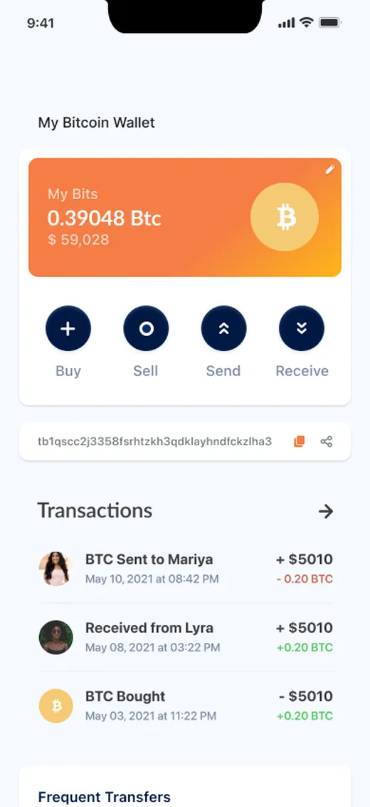
01Overview
One app for accounts, cards, crypto wallets and transfers, designed so moving money never feels risky.
Metapixel (Cryptabanc in the product) is a mobile finance app that puts a bank account, debit cards, crypto wallets, transfers and mobile check deposits in one place. I designed the whole product end to end: the information architecture, every user flow, more than 190 screens and the component system behind them.
02The challenge
What had to be solved
Each feature on its own was simple. Together they were not. A new user had to sign up, verify their identity, open an account, create a card and maybe set up a crypto wallet, while a returning user just wanted to send money. Every one of those journeys carries risk, so a confusing step costs trust, not just time.
Design goals
- Get a new user from download to a working account without a long form
- Make high-stakes actions (send, sell, deposit) feel slow and certain in the right places
- Let banking and crypto share one visual language so they feel like one product
- Design for real states: empty, pending review, errors and success, not just the happy path
03Process
How I approached it
- Map the productGrouped every feature into six areas (identity, accounts, cards, crypto, payments, profile) and one home screen that changes with the user.
- Design the journeysWrote each flow as steps before drawing it: sign-up, KYC, card creation, send, sell and check deposit.
- Build the systemInputs, steppers, amount fields, confirmation sheets and success states built once and reused across every flow.
- Cover the edgesDesigned empty dashboards, review states, password errors and failed steps alongside the main screens.
04Onboarding that earns trust first
Value first, paperwork second.
The intro screens sell the outcome (buy crypto, earn cashback, move money) before asking for anything. Sign-up then splits into short steps with a progress stepper, and each sensitive field explains why it is needed.
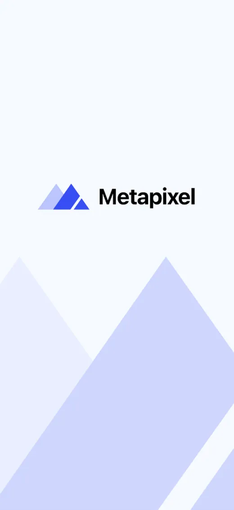
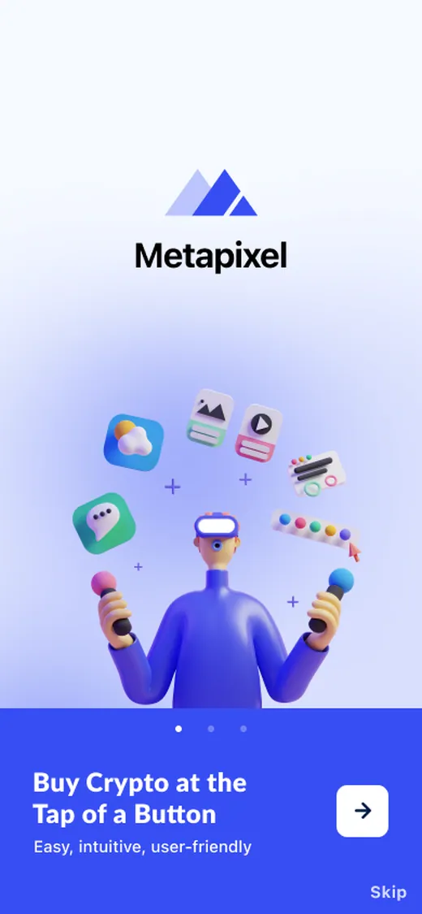
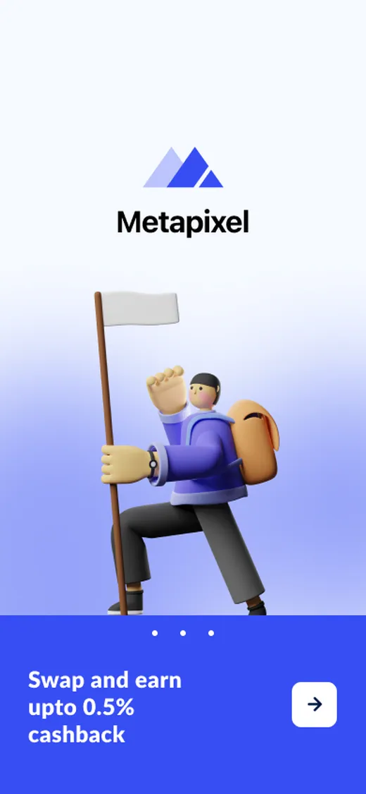
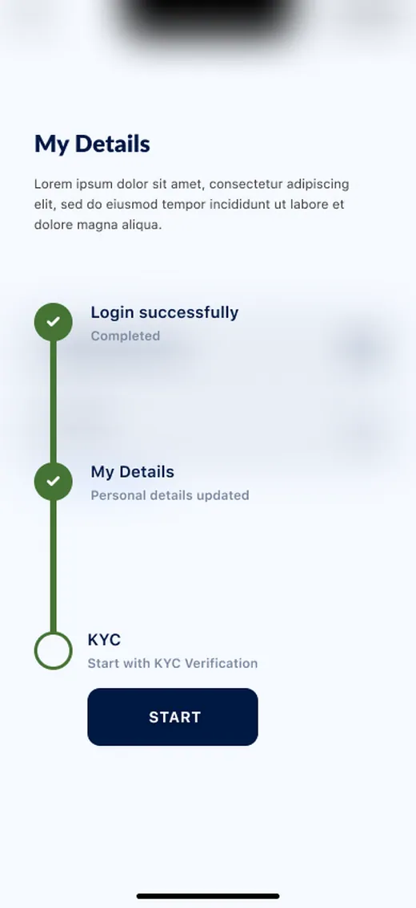
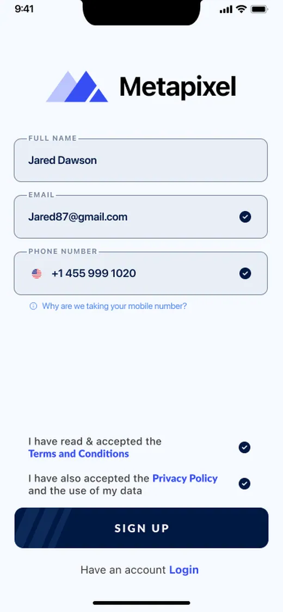
05Identity and account setup
KYC in three clear steps.
Personal details, identity verification and Face ID are separate screens with one job each. A setup checklist on the dashboard shows what is done, what is pending review and what still needs a document.
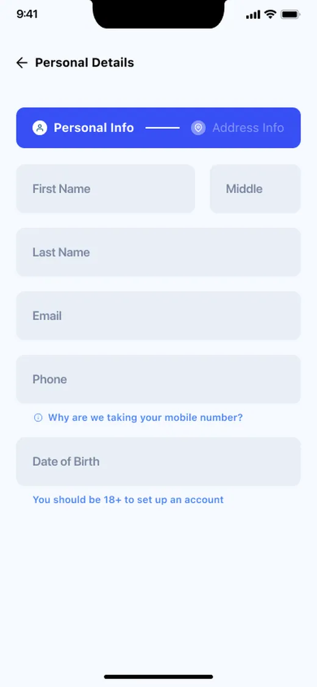
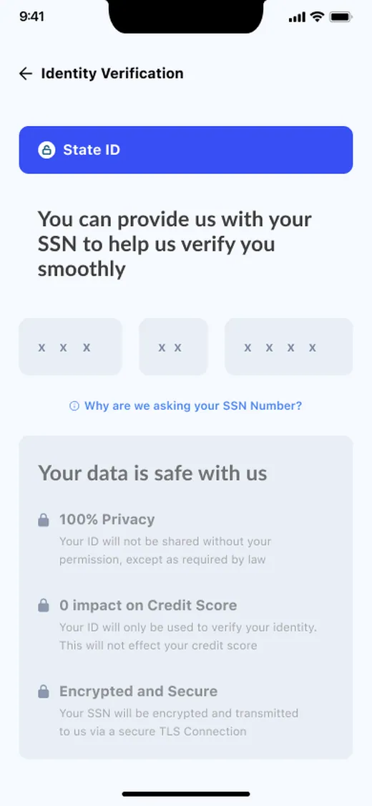
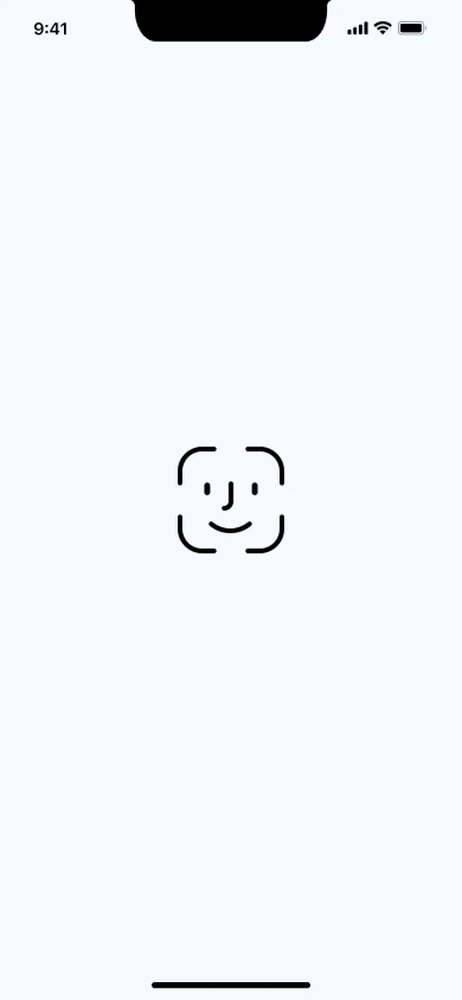
06A home screen that adapts
New, returning and crypto users each get the right home.
A brand-new user sees setup tasks. A returning user sees balances and quick actions. Once a crypto wallet exists, the dashboard adds wallet cards using the same layout, so nothing has to be relearned.
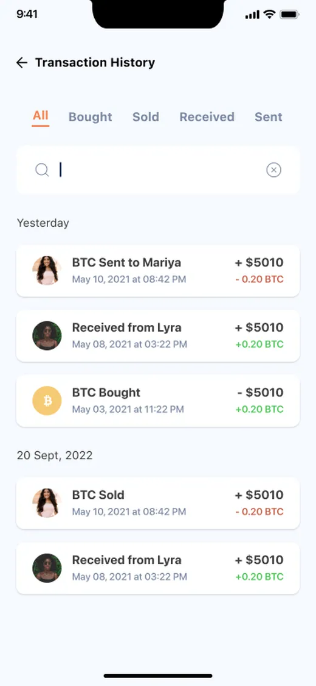
07Moving money safely
Slow down the moments that move money.
Send and transfer flows use one decision per field (source, destination, amount, note), a full summary before confirming and a clear success screen with the reference details.
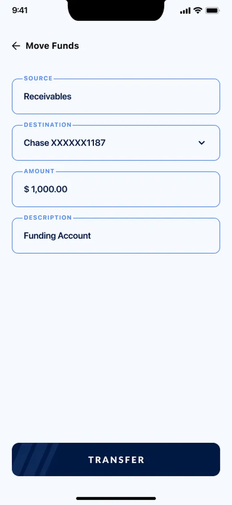
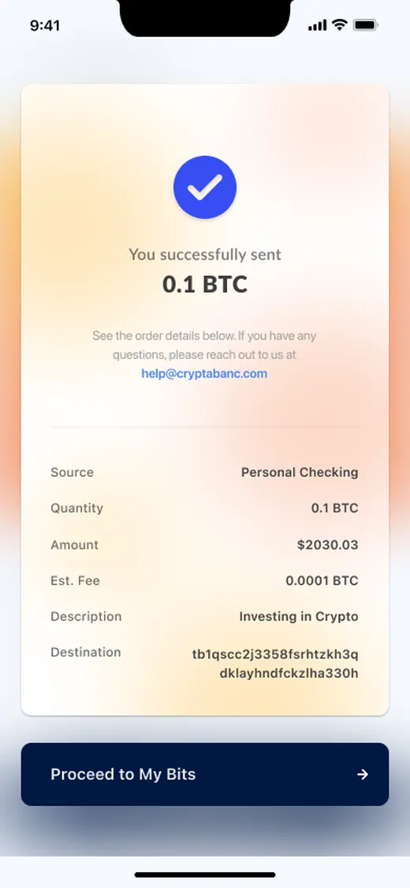
08Virtual and physical cards
Create a card in under a minute.
Card creation is a three-step stepper: details, billing address and card skin. The confirmation screen restates every choice, and the card dashboard puts balance, spending limit and freeze controls one tap away.
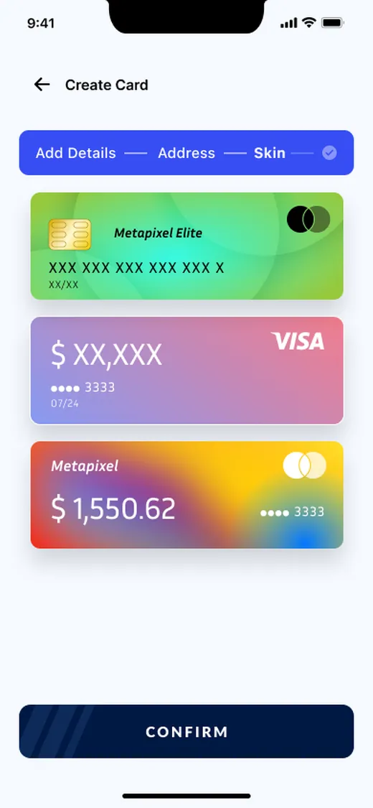
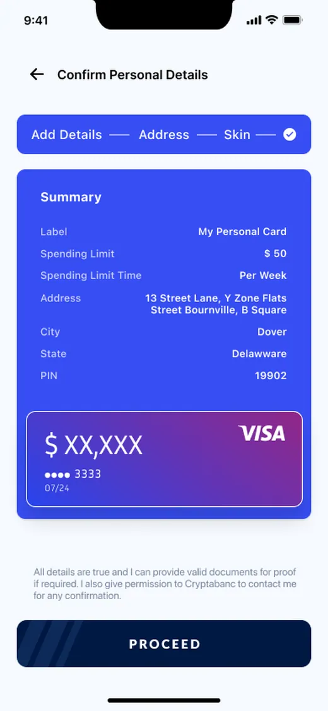
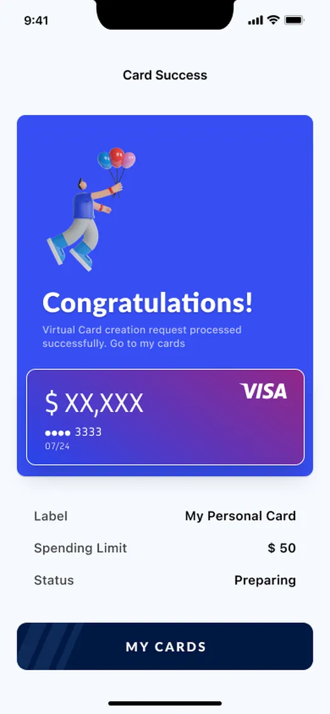

09Deposits, crypto and profile
The rest of the product, same rules.
Mobile check deposit uses a camera frame with live guidance, crypto sell mirrors the send flow, and referral and profile screens reuse the same cards and rows.
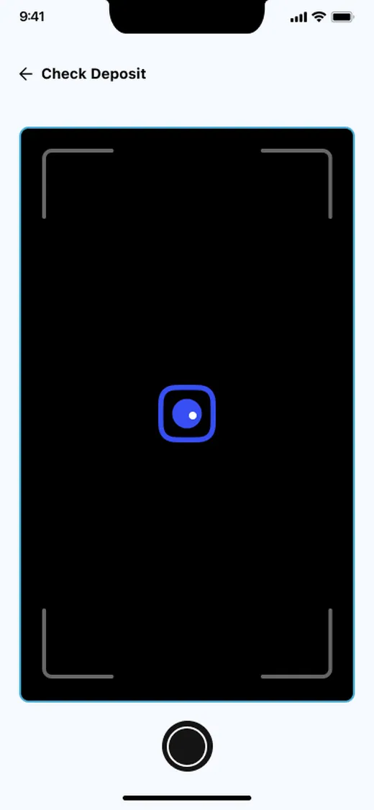
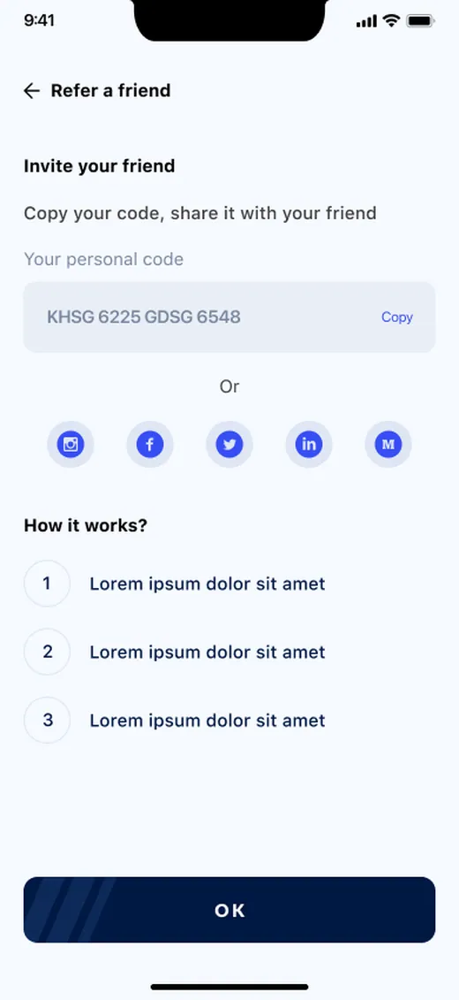
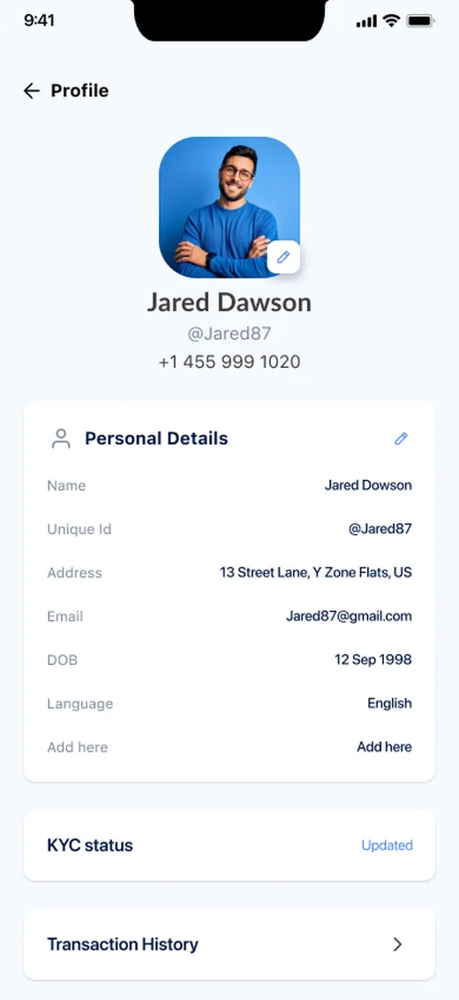
10Decisions
Key design decisions
Sign-up, KYC and card creation all use the same stepper, so users learn it once and always know how many steps are left.
Send, sell and deposit always show a full summary first. It adds one tap and removes most "did that go through?" support questions.
Wallets reuse the account card, list rows and actions from banking, so switching between fiat and crypto never feels like changing apps.
11Design system
Visual language
A cool blue palette with high-contrast navy for actions, generous white space and rounded 16px cards. Inputs, amount fields, steppers, bottom sheets and success states are shared components with defined error and disabled states.
TypeInter, with tabular figures for every amount
12Outcome
What was delivered
The result is a 190+ screen product where banking, cards and crypto feel like one app. Every high-trust action has a confirmation and a clear result, every setup flow shares one stepper, and the component library means new features can be added without new patterns.
If the project continues, next I would:
- Usability test the send flow with first-time crypto users
- Add transaction search and spending insights
- Design a dark theme from the existing tokens
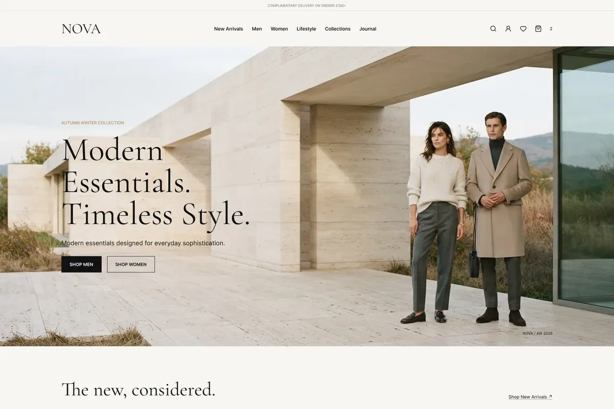